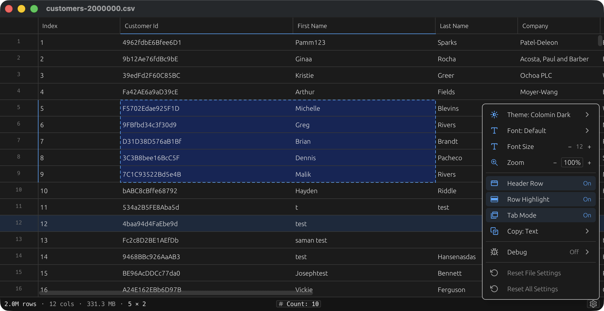
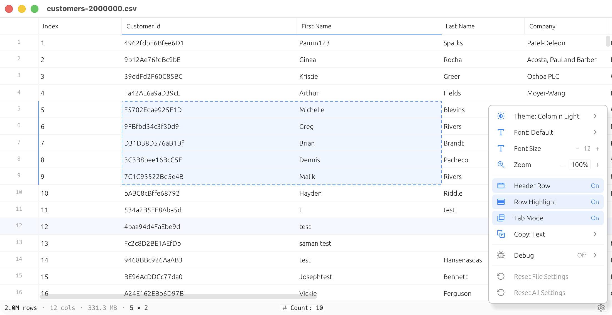

Open it instantly. Edit it like a spreadsheet. Save it like a file. Colomin handles millions of rows without flinching, no cloud, no subscription, no waiting for a worksheet to load.


01Built for real data
Colomin is opinionated about what a CSV editor should do: open fast, edit fast, save fast. The rest is invisible until you need it.
Background indexing streams huge files into view. Start editing while the rest of the file is still loading.
Auto-detects comma, semicolon, tab, and pipe. Infers column types so numbers sort like numbers.
Rectangular selection, copy/paste ranges, in-place editing, undo/redo. Keyboard navigation that actually works.
Count, sum, avg, min, max, and character length update live as you select cells. No formulas required.
Multiple bundled light and dark themes, plus font and zoom controls. Tuned for long sessions and tired eyes.
Real .app on macOS, .deb / .rpm / .AppImage on Linux, .msi on Windows. Finder, Explorer, GNOME Files "Open With". Drag-and-drop. Tab mode or separate windows.
02Built for the file
Most CSV tools want to be something else - a calculation engine, a presentation layer, a database. Colomin just opens the file, lets you edit it, and saves it back, at the speed your CPU can actually go.
03Keyboard first
Every common action has a shortcut. Once you learn five of them, you'll never touch the menu bar again. (⌘ on macOS, Ctrl on Windows / Linux.)
Free and open source for personal use. macOS · Linux · Windows. Source under AGPLv3.